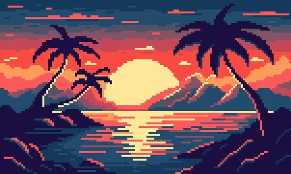

Collection 1

The picture shows a beautiful sunset over the ocean. The sun is slowly disappearing behind the mountains, filling the sky with warm colors such as orange, pink, red, and yellow. The sunlight creates a bright reflection on the surface of the water, making a long golden path that stretches from the horizon toward the front of the picture. Although the picture is made in a pixel-art style, it still gives the scene a calm and peaceful feeling.
On both sides of the picture, there are tall palm trees standing near the water. The palm trees have long, curved trunks and large leaves that spread across the sky. On the left side, there is a smaller palm tree near the edge of the ocean, while a much taller palm tree can be seen on the right. Their dark shapes stand out against the bright sunset in the background.
In the middle of the picture, several mountains can be seen in the distance. They are dark blue and purple, with bright orange and pink areas around them where the sunlight touches the edges. The mountains make the landscape look deeper and more interesting. Behind them, the sun is large and bright, creating a strong contrast between the sky and the darker parts of the scene.
The ocean covers most of the lower part of the picture. It is filled with many horizontal lines in different shades of blue, pink, orange, and yellow. These lines represent the movement and reflection of the waves. The closer the water gets to the viewer, the darker it becomes, while the area near the sun is much brighter.
Overall, the picture creates the feeling of a quiet tropical evening. The palm trees, mountains, ocean, and setting sun work together to create a relaxing scene. It looks like a place where someone could sit by the beach, watch the sunset, and enjoy the peaceful atmosphere.